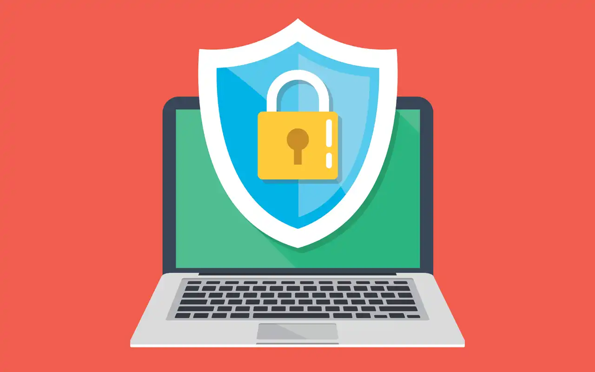
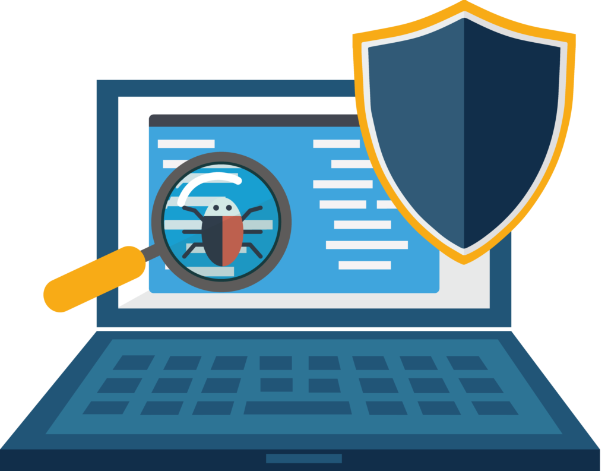

Definición
Es un software creado específicamente para ayudar a detectar,
evitar y eliminar malware (software malicioso).
Un antivirus es un tipo de software que se utiliza para evitar,
buscar, detectar y eliminar virus de una computadora. Una vez
instalados, la mayoría de los software antivirus se ejecutan
automáticamente en segundo plano para brindar protección en tiempo
real contra ataques de virus.
Los programas integrales de protección contra virus ayudan a
resguardar tus archivos y hardware de malware, como gusanos,
troyanos y programas espía, y además pueden ofrecer protección
adicional, como barreras de protección (firewall) personalizables y
bloqueos de sitios web.
Tipos comunes de amenazas informáticas
|
|
A medida que avanza el Internet de las cosas ("IoT", por sus
siglas en inglés) también lo hace el riesgo de delitos
informáticos en teléfonos móviles y otros aparatos conectados
a Internet, no solo en tu computadora personal. Según el
Informe sobre las amenazas para la seguridad en Internet 2018
de Symantec, el malware en aparatos móviles, incluidos los
programas espía, ransomware y virus, aumentó un 54% en 2017, y
las filtraciones de información y el robo de identidad también
van en aumento.
|
¿Qué es malware? |
Malware, abreviatura de "software malicioso" es un término
general que se refiere a una amplia variedad de programas
diseñados para dañar o realizar acciones no deseadas en una
computadora, servidor o red informática; los ejemplos más
comunes son los virus, los programas espía y los troyanos. El
malware puede ralentizar o bloquear tu aparato o borrar
archivos. Los piratas informáticos por lo general usan malware
para enviar spam, obtener información personal y financiera e
incluso robar identidad.
|
¿Qué es un programa espía?
|
Un programa espía es un tipo de malware que se agrega
automáticamente y se oculta en el sistema operativo de una
computadora sin el permiso del usuario, a fin de hacer cambios
no deseados en la experiencia del usuario. Se puede usar para
espiar tu actividad por Internet y puede generar anuncios no
deseados o hacer que tu navegador muestre ciertos sitios web o
resultados de búsqueda.
|
¿Qué es el "phishing"?
|
Los ataques de Phishing usan el correo electrónico o sitios
web fraudulentos para intentar engañarte y que brindes
información personal o financiera haciéndose pasar por
entidades de confianza. Pueden afirmar que hay un problema con
la información de pago o que han notado actividad en una
cuenta, y pedirte que hagas clic en un enlace o archivo
adjunto y proporciones información personal.
|

Programas antivirus y software de protección para computadoras
Los programas antivirus y el software de protección para
computadoras están diseñados para evaluar datos, como páginas web,
archivos, software y aplicaciones, a fin de encontrar y erradicar
malware tan pronto como sea posible.
La mayoría de ellos brindan protección en tiempo real, que permite
resguardar tus aparatos de las amenazas entrantes, escanean toda tu
computadora de forma regular para encontrar amenazas conocidas y
brindan actualizaciones automáticas, e identifican, bloquean y
eliminan códigos y software maliciosos.
Debido a que varias actividades se realizan actualmente por Internet
y nuevas amenazas emergen continuamente, es más importante que nunca
instalar un programa de protección antivirus. Afortunadamente,
actualmente existe una gran cantidad de productos excelentes en el
mercado para elegir.
¿Cómo funciona un antivirus?
Un software antivirus comienza comparando tus archivos y programas
informáticos con una base de datos de tipos de malware conocidos.
Debido a que los hackers crean y distribuyen nuevos virus
constantemente, también hará un escaneo de los equipos en la
búsqueda de un tipo nuevo o desconocido de amenaza de malware.
Generalmente, la mayoría de los programas usará tres dispositivos de
detección diferentes: detección específica, la cual identifica el
malware conocido; detección genérica, la cual busca partes o tipos
de malware conocido, o patrones que se relacionan en virtud de una
base de código común; y detección heurística, la cual escanea virus
desconocidos al identificar estructuras de archivos sospechosas
conocidas. Cuando el programa encuentra un archivo que contiene un
virus, generalmente lo pone en cuarentena y/o lo aparta para
eliminarlo, lo que lo hace inaccesible y permite eliminar el riesgo
de tu aparato.
Ventajas
-
Ordenadores limpios: Con la llegada de la tecnología en los
años 80`s donde comenzó el intercambio de información entre
ordenadores e Internet, también comenzó la aparición de virus
informáticos lo que provoco varios daños al computador como:
cambiar secuencias de claves, eliminar archivos y esconder
información privada; es entonces cuando usar antivirus fue la
solución para los inconvenientes que comenzaban a presentarse en
el equipo, garantizando el monitoreo, exterminio y defensa de los
ordenadores. Son muchas las opciones que existen en cuanto a
antivirus se trata, tomando en cuenta que cada vez los usuarios
envían y reciben más información mediante correos electrónicos, de
esta misma manera se envían y reciben códigos dañinos.
-
Repele elementos no deseados: Los antivirus suelen combatir
con otros elementos de software no deseado como por ejemplo el
spyware, malware o rootkits, también protege de intentos de hackeo
y es por eso que cuenta con un firewall, es decir, un software que
bloquea las conexiones remotas, además de una base de datos que
tiene disponible todas las definiciones de virus, así como una
enciclopedia de estos.
-
Seguridad en Internet: La mayoría de estos programas
cuentan con monitoreo en línea, lo que permite mostrar un alerta
al usuario cuando ha accedido a un sitio infectado y así lograr
contener el virus; el siguiente paso a cumplir es prohibir el
acceso a este sitio para todos los usuarios que usen un antivirus
en el ordenador.
-
Bajos costos: A pesar de existir varios antivirus que
generan costos elevados de dinero, también hay otras opciones para
proteger tu equipo; incluso algunos de estos programas pueden
adquirirse de manera gratuita (prestando el mismo servicio que uno
pago). Así obtengas un antivirus costoso, siempre será más
rentable pagar este servicio, que comprar nuevos ordenadores cada
3 meses.
Desventajas
-
Sistemas lentos: Usar antivirus sin duda alguna trae muchas
ventajas para los ordenadores, pero también genera ciertos
inconvenientes al momento de emplearlos, según el procesador y
memoria RAM que pose tu equipo este programa puede resultar
dañino, ya que el sistema se pone lento por el continuo monitoreo
de los antivirus.
-
Más de dos antivirus: En ocasiones un solo antivirus no
presta los servicios completos que necesitamos, es por eso que en
momentos el usuario decide instalar un segundo antivirus, siendo
esta muy mala decisión ya que los dos antivirus pueden resultar
incompatibles, generando como consecuencia que ambos se desactiven
desprotegiendo el ordenador, dejando el paso libre para software
no deseados y códigos dañinos; que le restan utilidad a tu
ordenador o teléfono celular.
-
Continúas actualizaciones: Este tipo de programas requieren
de una constante actualización, ya que están propensos a saturarse
de códigos malignos y software indeseados; las repetidas
actualizaciones generan incomodidad ante los usuarios, además el
gasto de recursos para descargar nuevas versiones del mismo
antivirus antes adquirido. Puede resultar como solución
programarlo para que se actualice automáticamente, pero si no
cuentas con una buena conexión a internet; esta configuración te
generará un mal gasto de recursos.
Tipos de antivirus según su finalidad
|
Antivirus preventivos |
Se caracterizan porque analizan la entrada y salida de todos
los datos en tu ordenador con la finalidad de interceptar
posibles amenazas, anticipándose a la infección del equipo
por parte de programas maliciosos. Están instalados en la
memoria interna del ordenador y en ocasiones pueden llegar a
ralentizar el funcionamiento del mismo.
|
Antivirus identificadores
|
Como su propio nombre indica, son antivirus que exploran el
sistema operativo de tu ordenador con la finalidad de
identificar posibles virus existentes en el mismo. Rastrean
secuencias de bytes de códigos específicos e intentan
identificar comportamientos extraños o patrones fuera dentro
de lo común dentro de los programas existentes.
|
Antivirus descontaminadores
|
Cuando el virus ya se encuentra identificado en nuestro
ordenador, el antivirus de tipo descontaminador se encarga
de eliminar esta infección. Tiene algunas funciones
similares a los antivirus identificadores.
|
Tipos de antivirus según su objetivo específico
|
|
No todos los antivirus están diseñados para contraatacar un
mismo tipo de virus, por ello es importante que identifiques
los tipos de antivirus que existen según su objetivo
específico:
|
Firewall o cortafuegos
|
El firewall (cortafuegos en español) controla la entrada y
la salida de datos de tu ordenador y bloquea «como un muro»
toda aquella actividad que le resulte dudosa. Actúa de forma
preventiva. Actualmente podemos identificar 3 tipos de
firewall distintos: los servidores proxy, los filtros de
capa de red (o de paquete) y los cortafuegos de capa de
aplicación.
|
Antipop-up
|
Este es un antivirus muy simple que se encarga únicamente de
evitar que algunas webs abran de forma automática ventajas
emergentes que puedan resultar molestas al navegar por
Internet.
|
Antispyware o antiespías
|
Este antivirus tiene el objetivo de detectar y eliminar
programas espías que se hayan instalado en nuestro equipo
sin nuestro consentimiento. La finalidad de estos programas
espías maliciosos y silenciosos es recabar información sobre
el usuario (contraseñas, hábitos de navegación, etc.) para
pasarla de forma ilegal a terceros.
|
Antispam
|
Su objetivo específico es el que identificar emails de
dudosa procedencia y mandarlos directamente a la bandeja de
spam. Prácticamente todos los proveedores de servicios de
correo electrónico, como son Gmail, Hotmail, Yahoo, etc.
cuentan con sus propios sistemas antispam.
|
Antimalware
|
Los antimalware están diseñados para analizar, detectar,
prevenir y eliminar sofware malicioso en nuestros equipos,
es decir, malware. No es una simple herramienta (como sí
puede serlo un antipop-up), sino que es un programa más
completo que normalmente ya incorpora varias de las
funciones de los antivirus mencionados en esta lista.
|
Tipos de antivirus según su ejecución
|
|
Según esta clasificación podemos encontrar:
|
Antivirus online y antivirus offline
|
Todos aquellos antivirus que no necesitan ser instalados en
tu equipo, sino que actúan unicamente a través de Internet
se clasifican como antivirus online. Si no requieren
Internet para ser ejecutables, son antivirus offline.
|
Antivirus pasivo y antivirus activo
|
Si el antivirus sólo actúa cuando el usuario lo solicita,
entonces hablamos de un antivirus de tipo pasivo. Por el
contrario, si el antivirus actúa de forma autónoma sin
necesidad de que el usuario le de una orden específica,
entonces hablamos de un antivirus de tipo activo
|
Tipos de antivirus según la marca
Existen múltiples marcas de antivirus para ordenador, pero como no
podemos mostrártelos todos, a continuación mencionamos los 15
mejores antivirus por marcas:
- Kaspersky
- ESET
- Norton
- AVG
- PC Tools
- BitDefender
- Avast
- McAfee
- Panda
- Webroot
- Trend Micro
- BullGuard
- Avira
- Sophos
- Fortinet